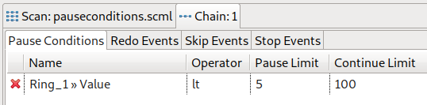

Each chain can have zero or more pause conditions. A pause condition is a definition based on a device, an operator and a limit evaluating to true or false, e.g. a value of a device is equal to a given constant. All pause conditions in a chain define an inhibit-state, i.e. if any of the definitions evaluates to true, execution is inhibited (the chain is paused) until all definitions evaluate to false.
Any client connected to an engine executing a scan which currently is paused due to an inhibit state evaluated to true, can override that state by pressing the Play-Button. Any pause condition which evaluated to true is now in an overridden state as long as it becomes false again. If there are only false and overridden pause conditions the chain resumes execution.
Keep in mind, that by pressing the pause button, the whole scan is paused, i.e. each chain is paused. The user pause overrules any inhibit states. A scan paused by the user can only be resumed by pressing the Play-Button (even is all pause conditions suddenly evaluate to false).
For any pause condition a hysteresis can be defined, i.e. besides the pause limit which alongside the operator defines when the condition evaluates to true (induce pause state) a second value, the continue limit can be set to enforce the expression to evaluate to false regarding that value.
Consider the following definition of a device value with operator lt (less than), pause limit and (different) continue limit:

The chain will pause any time the given value is less than five. But (in contrast to the situation where no continue limit is set) it will resume only when the value is greater or equal to 100 (and not five).